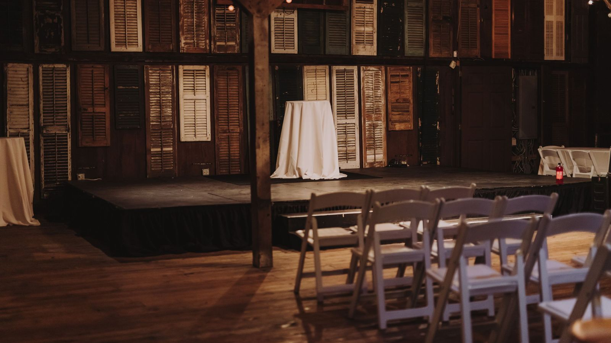

PRODUCT — PLACEHOLDER
Handwriting LP, 180g black
$32
View in the store →NEW RECORD · OUT NOW
Bryn Hollis's fourth record was written over two winters in a rented house outside Durham and recorded a mile from it. There is a pedal steel on six of the songs and a car passing on one of them, and neither was removed.
HANDWRITING · LP · 11 SONGS · 2026 · SELF-RELEASED
THE RECORD

ON THE ROAD
Touring solo in the North East and with the trio from Chicago west.
Tickets are sold only through the venue's official ticketing partner. We do not work with resale sites and cannot help with tickets bought from one.
INSIDE THE RECORD
Written by Bryn Hollis. Produced by Hollis and Wes Calloway. Recorded at a rented house outside Hillsborough, NC, January and February 2026.
Upright bass: Marta Cruz-Obi. Pedal steel: Ronan Deeds. Drums and percussion: Wes Calloway.
Mixed by Iona Serrell. Mastered by Peter Vahn. Sleeve design and hand-lettering: Ines Batalha.
All songs published by Long Field Songs (BMI).
THE SONGBOOK
Every song from every record, typed out properly. Take them, learn them, play them at your kitchen table. If you record one, ask first, and the answer is usually yes.
Background plate: Photo: Ingrid SollieDemo stand-in image: Alexandr Popadin / Unsplash
ABOUT
Hollis grew up between a farm road and a river town in eastern North Carolina and has lived in Durham since 2014. The songs are mostly about work, weather, and the people who stay: a night-shift lamplighter, a road that only goes one place, a letter that never got sent.
Three records in, the writing has got plainer and the arrangements have got quieter. Handwriting was made in a rented house with the windows open, which is why there is a car on track six. It was the fourth take and it was the right one.
She tours seated rooms almost exclusively, solo in the east and with a trio in the west, and has played most of them more than once.
ILLUSTRATIVE PRESS QUOTES — INVENTED PUBLICATIONS, DEMO CONTENT
“Hollis has the rare discipline to leave a song alone once it is finished.”
— Field & Frequency
“Eleven songs, no filler, and a pedal steel player who understands restraint.”
— The Slow Ledger
“The quietest room I have been in all year, and nobody was looking at a phone.”
— Threadbare Review, on a show in Philadelphia
Writing about the record? Everything you need is in the press kit. Open the press kit
LIVE
This is the last song on the record. It is about the field behind my mother's house, which is for sale, if anyone is looking. We did this in one take because I was not going to do it twice.
SungThere's a long field back of my mother's place
that runs down to the pines,
and when I was young I thought the world
ended at that tree line.
I've been to Portland and to Montréal
and I've been to Glasgow once,
and I've stood in rooms with the lights down low
for people who'd come a long way for the songs.
But it's the long field I see
when I close my eyes to sing,
the long field, the long field,
where I don't need anything.
My mother's selling up in spring,
the man from the bank has been,
and somebody else will mow that field
or let it all go back to green.
And that's all right, I think it is,
a field's not something you own,
you stand in it for a little while
and then you carry it home.
But it's the long field I see
when I close my eyes to sing,
the long field, the long field,
where I don't need anything.
[Guitar rings out. Room tone. A chair creaks.]
My father did not actually light the lamps. His uncle did. I gave the job to my father because it scanned better, and he has forgiven me.
SungMy father lit the lamps on Mangum Street
from the depot to the bottom of the hill,
a ladder and a box of matches
and a thermos he never filled.
He'd come home when the milk truck came,
his coat smelling of coal oil and rain,
sleep the whole bright day away
and get up and do it all again.
Somebody has to be awake
while the town is dreaming,
somebody has to walk the dark
so the dark has a meaning.
They put the lights on a timer in '71,
a man from the county came out,
shook his hand and gave him a clock
and nobody talked about it much.
Now I work nights at the hospital
and I walk to my car at six,
and every light on the parking deck
is a light he didn't have to fix.
Somebody has to be awake
while the town is dreaming,
somebody has to walk the dark
so the dark has a meaning.
[Applause.]
[Room noise.] Wes Calloway: Can I get a little more steel in the wedge? Bryn Hollis: Ronan, you are in the wedge. Ronan Deeds: I am always in the wedge. Bryn Hollis: Okay. Small Towns. From the top, slow.
SungSmall towns don't die the way they tell you,
there's no last day and no parade,
the bank becomes a church becomes a flea market
and the sign out front just fades.
The diner's open Thursday through Saturday,
the pharmacist drives in from Wilson,
there's a man who mows the ballfield every week
though nobody's played there since.
And I could have left, I had the chance,
I had the car and the address,
but somebody's got to know the names
of the people in the photographs.
My friends all live in Raleigh now
and they come home for the funerals,
and they say it hasn't changed at all,
and that's the only thing that isn't true.
I keep the key to the Legion hall,
I know which courthouse step still creaks,
and when the last of us is gone from here
let it be a Tuesday, let it be me.
And I could have left, I had the chance,
I had the car and the address,
but somebody's got to know the names
of the people in the photographs.
Bryn Hollis: That will do. Thanks, everybody.
PHOTOGRAPHS
STORE
The store is hosted on our storefront platform. Every button here opens it in a new tab.
$32
View in the store →$40
View in the store →$15
View in the store →$28
View in the store →$30
View in the store →$25 · this variant is sold out, edition complete
View in the store →Also in the store: Handwriting cassette, $12 · Cotton tote, one-colour Clay print, $18 · Digital download of Handwriting (WAV / FLAC / MP3), $10. View the whole store →
Vinyl and the songbook are also at the merch table, cash or card, and the artist is usually standing behind it.
Orders, payment and shipping are handled by the store platform. This site never collects card details.
Presale codes, a song a month, and a scan of the page. Two clicks, no algorithm.
CONTACT
Agency enquiries, routing and holds. Trio and solo both available.
booking@brynhollis.demoRedbud Artists (North America), Kestrel Touring (UK and Europe)
Interviews, reviews, photo requests, guest list for reviewing press. Press kit is public and needs no request.
press@brynhollis.demoLittle Fields PR
Everything else, including partnership and long-lead planning.
management@brynhollis.demoArdenwood Management
Film, television, advertising, games, and cover or lyric-reprint permissions. Masters and publishing are both controlled by the artist, which makes this fast.
sync@brynhollis.demoBios, high-resolution photographs with credits, stage plot, input list, logos and a one-sheet. No form, no password.
Open the press kit →